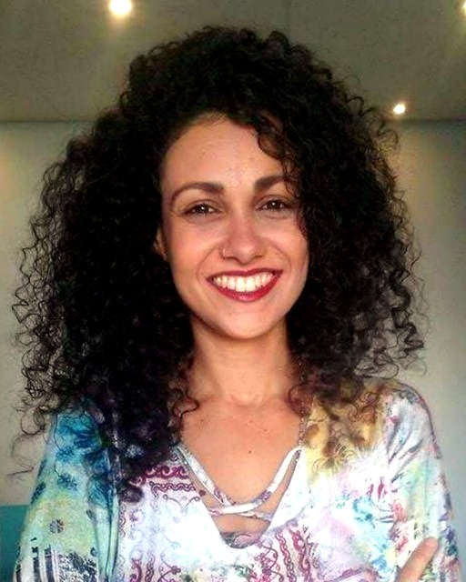

Carla Miranda oferece acompanhamento terapêutico na Asa Norte, em Brasília, e também online para pessoas que desejam trabalhar ansiedade no dia a dia, autossabotagem, padrões emocionais repetitivos, relacionamentos e momentos de mudança.
Agendar conversa pelo WhatsApp
Nem sempre entender racionalmente um padrão é suficiente para mudá-lo. Muitas pessoas percebem que repetem certas escolhas, reações ou dinâmicas mesmo quando já sabem que gostariam de agir de outra maneira. O trabalho de Carla parte da observação desses padrões e da relação entre consciência, emoções, crenças e respostas aprendidas.
O acompanhamento é voltado a quem busca um processo de autoconhecimento com aplicação prática, seja diante de ansiedade, dificuldade de decisão, autossabotagem, conflitos nos relacionamentos, transição profissional ou sensação de estar preso aos mesmos ciclos.
Observar gatilhos, respostas automáticas e padrões emocionais que podem intensificar tensão, antecipação e dificuldade de presença.
Reconhecer comportamentos, crenças e escolhas que se repetem mesmo quando existe uma intenção consciente de mudança.
Perceber padrões de vínculo, comunicação, limites e expectativas que influenciam relações afetivas, familiares e profissionais.
Criar espaço para clareza quando antigas referências já não servem e novas escolhas ainda estão se formando.
Carla é criadora do protocolo Metatransformação Neurobiológica, uma abordagem estruturada em etapas que integra percepção consciente, atualização de significados, trabalho com crenças e respostas emocionais e práticas voltadas à construção de novas referências internas.
Identificação dos padrões que atuam de forma automática e das situações em que eles aparecem.
Investigação e reestruturação de crenças, significados e condicionamentos associados ao padrão percebido.
Desenvolvimento de novas formas de perceber e responder às experiências emocionais.
Integração de escolhas, comportamentos e referências coerentes com a mudança que a pessoa deseja construir.
O atendimento presencial acontece no Espaço Arkamatra, na Asa Norte, em Brasília. Para quem está em outras regiões do Distrito Federal, outras cidades ou prefere a flexibilidade do formato remoto, Carla também realiza atendimento online.
Para saber sobre disponibilidade, formato das sessões e qual modalidade faz mais sentido para você, entre em contato diretamente pelo WhatsApp.
Há mais de 10 anos, Carla Miranda trabalha com facilitação de consciência, reprogramação emocional de crenças, atualização de significados e práticas voltadas ao desenvolvimento de novas respostas e possibilidades de escolha. Seu trabalho inclui a Metatransformação Neurobiológica e o Método de Calibração Energética “Omega Quantum Coherence”.
Converse diretamente com Carla para conhecer o processo, tirar dúvidas e verificar disponibilidade.
Falar com Carla no WhatsApp